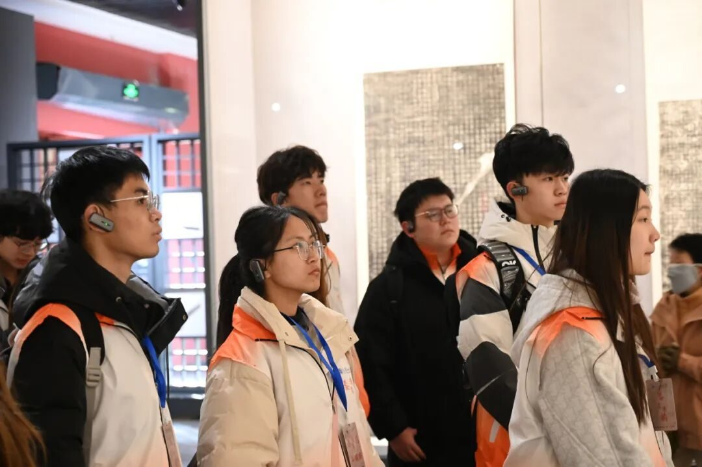
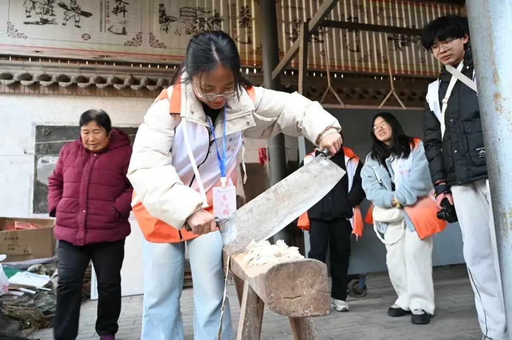
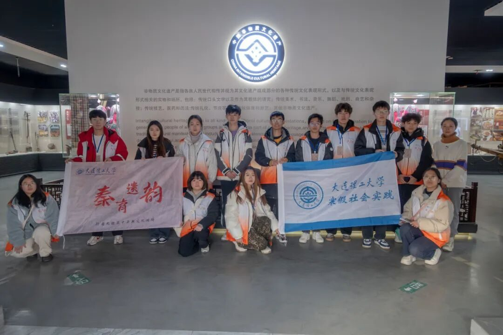
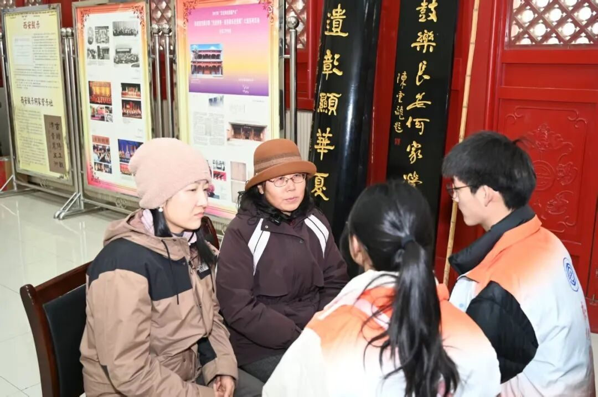
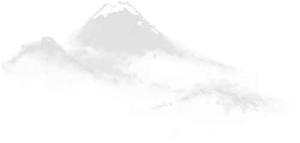

从碑林的起源到经典的解读，馆内陈列的内容无不吸引我们，馆外是琳琅满目的非遗体验项目。亲手体验拓印，非遗的美妙跃然于我们的手边，长街的尽头是无法演绎至尽的非遗气韵。高家大院内，皮影戏，伴随着独特的唱腔，在幕布上演，是民间的故事，艺术在闪烁。

纯手工打造的会动的风筝，微缩的社火情形模型，不计其数的小人儿，却每个人都长得不一样，动作、表情，各具特色。占据陕西省非物质文化遗产陈列馆整个门口的“青龙白虎”刺绣，凝聚着千万劳动人民的精湛技艺和绵长岁月。

踏碓、切翻、捣浆、抄纸，我们一点点照着非遗传承人马胜松老师的样子学习古法造纸技艺，我们一步步向着非遗传承的前方走去。何家营西安鼓乐，不仅是器乐的组合，音符的碰撞，更是艺人情感的倾泻，老师一字一句的领唱，掀起台下我们对西安鼓乐的向往。



街头采访，或是本地人带孩子走近家乡非遗，或是游客不远万里品味西安魅力，一字一句的回答，非遗的美丽在我们眼前愈发展现。专访非遗传承人，或是艺人的坚持，或是传承人的热爱，千年的文化在我们眼中漾起波澜。或许只是接触、了解非遗对于保护它起到的作用微乎其微，但每一次为非遗的驻足努力都一定能使其焕发出更多一点的光彩。非遗是历史文化长河里生命的跃现，在了解非遗、学习非遗的路上，我们任重道远。
-END-
来源 | 行者无疆实践团
图片 | 行者无疆实践团
文字 | 郑瑞瑄
编辑 | 郑瑞瑄
审核 | 李凌志 杩健辉
责编 | 邹靓靓